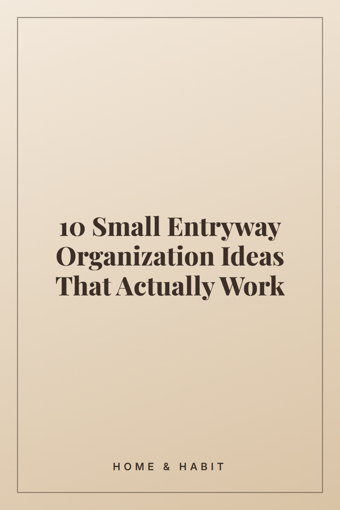

10 Small Entryway Organization Ideas That Actually Work

Struggling with a cluttered entryway? These small-space organization ideas help you keep shoes, bags and keys in place every day. Save this for your next home reset.
Mount hooks at two heights
Install a row of wall hooks at adult height and a lower row for kids or lighter items. Coats, bags and dog leashes get a home that is faster to use than a chair or floor, and the wall space is otherwise unused.
Pick a slim shoe rack
A narrow, tiered shoe rack tucks against the wall and holds several pairs without sticking out into the walkway. Keep only the shoes your household wears this season by the door and store the rest elsewhere.
Set out a key tray or bowl
Choose one small tray, bowl or wall-mounted dish near the door and make it the only place keys go. When keys always land in the same spot, the daily search for them stops.
Choose a slim console table
A shallow console, often under 12 inches deep, adds a drop zone for mail, sunglasses and a bag without crowding a tight hallway. Leave the top mostly clear so it stays useful rather than turning into a clutter shelf.
Use the back of the door
An over-the-door hanger or a flat rack on the inside of the entry door adds storage with no floor space. It works well for scarves, hats, umbrellas and reusable shopping bags.
Add a bench with storage
A small bench gives you somewhere to sit while putting on shoes, and a lidded or cubby-style base hides extras like gloves or seasonal items. Measure the width first so the door can still open fully.
Hang a mirror and a wall shelf
A mirror makes a small entry feel larger and gives you a last look before leaving. Mount a narrow shelf nearby for small daily items so they have a set place rather than the floor.
Use baskets and bins for sorting
Label one basket per person or per category, such as hats and gloves, dog gear or outgoing mail. Open baskets are quick to use, and a limit on what each one holds keeps things from piling up.
Set up a simple mail and paper spot
Put a small wall file or letter holder by the door and sort mail as you walk in: keep, recycle or act on. Clearing it once a week prevents a paper stack from building on the console.
Do a two-minute reset each day
Once a day, return strays to their places: shoes on the rack, coats on hooks, items back in baskets. A short routine keeps the system working better than occasional big clean-outs.